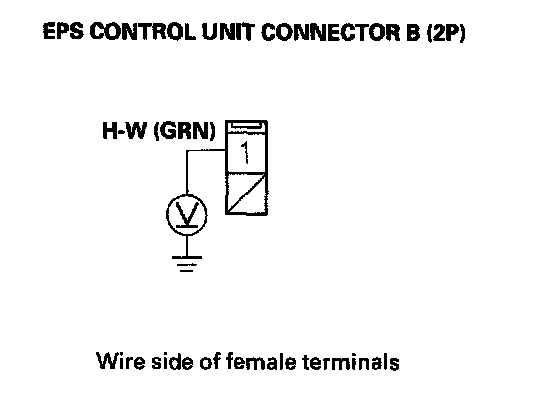
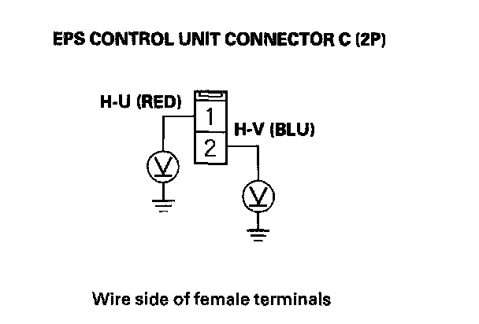
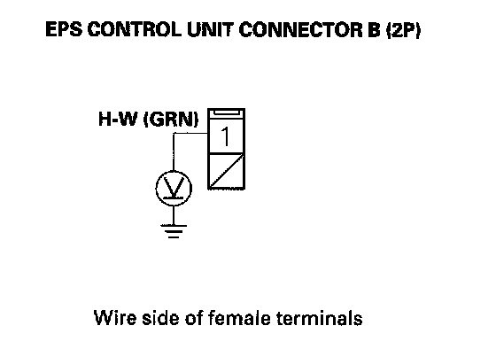
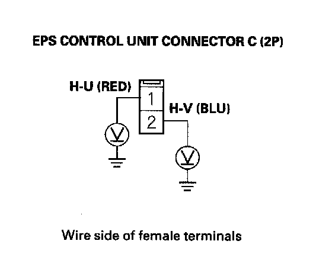

DTC 33-07
DTC 33-02: Upper FET Stuck ON (Initial diagnosis)DTC 33-07: Upper FET Stuck ON (Regular diagnosis)
1. Clear the DTC with the HDS.
2. Turn the ignition switch OFF.
3. Start the engine.
Does the EPS indicator come on?
YES - Go to step 4.
NO - Check for loose terminals or poor connections. If the connections are good, the system is OK at this time.
4. Check for DTCs with the HDS.
Is DTC 33-02 or DTC 33-07 indicated?
YES - Go to step 5.
NO - Troubleshoot the indicated DTC. If there are no DTCs, the system is OK at this time.
5. Turn the ignition switch OFF.
6. Disconnect EPS control unit connector B (2P) and connector C (2P).
7. Turn the ignition switch ON (II).
8. Measure voltage between body ground and EPS control unit connector B (2P) No. 1 terminal, connector C (2P) No. 1 terminal, and connector C (2P) No. 2 terminal individually.


Is there battery voltage?
YES - Go to step 9.
NO - Check for loose terminals in the EPS control unit connectors and motor connectors, and repair if necessary. If no poor connections are found, replace the EPS control unit.
9. Turn the ignition switch OFF.
10. Disconnect the motor 1P connector and motor 2P connector.
11. Turn the ignition switch ON (II).
12. Measure voltage between body ground and EPS control unit connector B (2P) No. 1 terminal, connector C (2P) No. 1 terminal, and connector C (2P) No. 2 terminal individually.


Is there battery voltage?
YES - Repair short to power in the wire between the EPS control unit and motor.
NO - Short to power in the motor wire harness, or motor internal circuit, replace the motor.